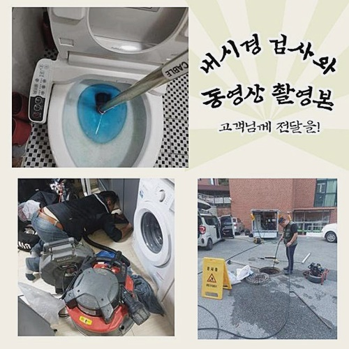
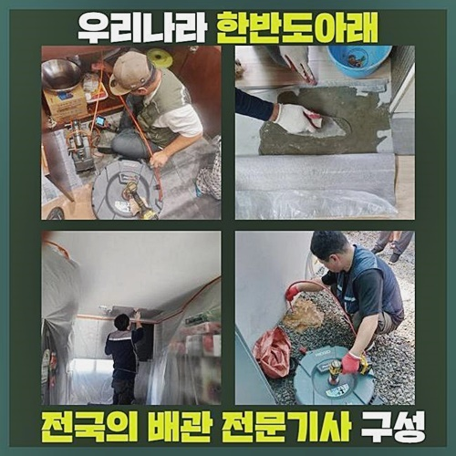
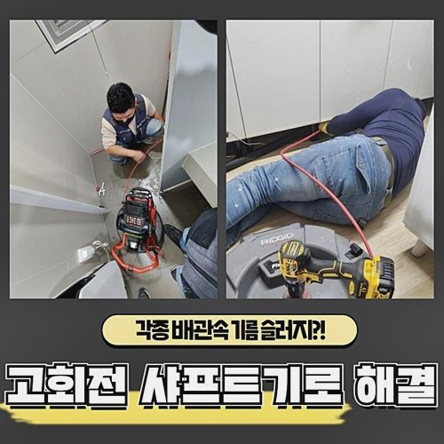
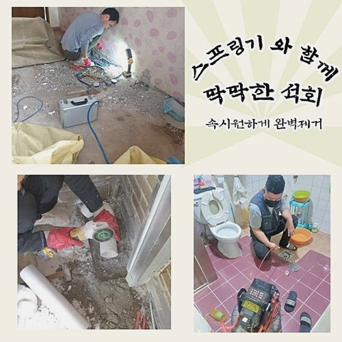
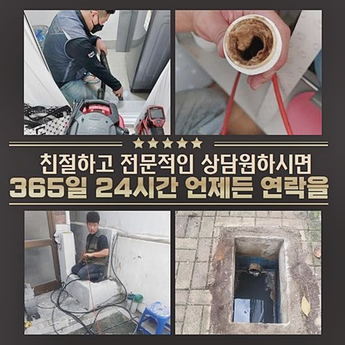
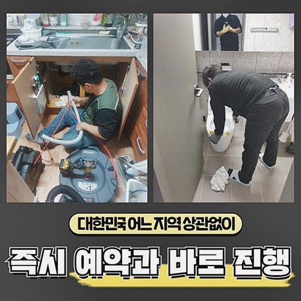
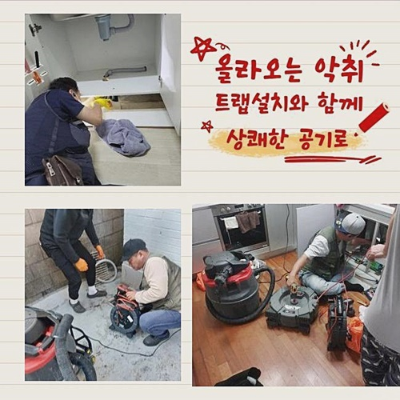

🏠 화정동싱크대배수관막힘 군자동 횡주관청소
용인 화정동 싱크대막힘 전문 시공 후기

📋 작업 개요
- 위치: 용인 화정동, 화정동, 용인
- 서비스 유형: 싱크대막힘, 변기막힘, 하수구막힘, 배관막힘, 뚫는업체, 배관청소
- 작업 일시: 2024. 6. 18. 7:51
- 업체명: 하수구수사대 (010-5615-2118)
🔍 문제 상황
화정동싱크대배수관막힘 군자동 횡주관청소
배수구막힘현상은 매우 빈번히 발생되지만 해결이어려운것중 하나라고할수있죠
주로발생되는 싱크대는 음식물잔해들이 하수구안에 퇴적되서 자주일어나곤해요
그치만 그럴때마다 전문기사들을 호출하는것이 곤란하다며 자가조치를 통해서 해결하는일이 많아요
잠깐동안의 효과가있겠지만 장기적인 측면에서보면 올바른방법이 아니에요
얼마전에 방문드린 현장사례로 뚫는방법을 알려드리도록 해볼게요
막힘증세가 발현되는 이유를우선 알려드려볼게요
설거지를하고난후 남겨진물과 기름기자체가 확실히 빠지지않고 정체되다가 굳게되어 발생되는 상황이많죠
일반적으로 가정집에선 빨리 대처하기위해 높은온도의 물을흘리거나 시중에서 쉽게구할수있는 약품들을 사용했지만 해결되지않고 도리어 물이솟구치는 현상까지 발발될수가 있답니다
원활한 배수로 이어지지않는다며 성급하게 저희업체를 호출하셨는데요
현장으로 방문드린후 신속히 살펴보았어요
하수도의 아래와연결된 호스를제거한뒤 하수구내부로 흡입기를 투입했는데요

🔎 원인 분석
💡 전문가 진단: 정밀 진단 장비를 사용하여 슬러지의 고착 여부를 판명하고 타격/세척 작업을 실시했습니다.
흡입장비가 무엇인지 설명드리자면 가정에있는 청소기처럼 비슷하다고 보시면되겠습니다
강한힘을 이용해서 오염물질이나 오수들을 소거시키는 방법이에요
대부분하수구는 재차 말씀드리지만 오염물로인해 막히게되는데요
그렇기때문에 흡입능력을 가지고있는 석션기를통해서 오염물이 얼마나찼는지 살펴보면서 간단히 막혀버린경우라면 흡입만을통해 처리하고있어요
이번현장의 경우에는 하수구내부에 오랜시간 쌓였기때문에 석회물은 빨아올리지못하고 잔해물질들만 흡입이되었어요
이후에는 하수구카메라를 활용해서 내부쪽을 들여다보기로 했답니다
사람의 눈으로는 살필수없는 배관속을 보기위해선 내시경장비로 투입해야해요
가끔 내시경장비없이 해결해보려는 경우도있죠
육안만으로 볼수없는곳에 추가현상이 전문도구없이 무리하여 쑤시게되면 배관파손및 손상까지 다양한문제가 발생될수있기 때문이랍니다
하수도안을 파악하지못하면 확실한 원인파악이 불가하여 재발문제가 발현될수있답니다
하수구cctv기계를 활용해서 꼼꼼하게 들여다보니 예측했던대로 기름슬러지들이 상당하게 누적된상황이었죠
물이빠져나갈틈이 없었으며 이물로인해서 씽크대까지 막힌것으로 추측이가능했죠

🔧 작업 과정
배수구카메라로 내부속을 들여다봤으면 드디어 뚫는과정에 들어가는데요
배관구성이나 내부설계로 문제를보인게 아니었기때문에 배관청소를 진행해야했는데요
샤프트기라는 도구를이용해 고착되어진 잔여물부터 분해하는과정이 필요했습니다
석션과정으로만 소거시키키어려운 고착물질들이 보일때 분해장비를 통해서 빨아올릴수있게 이물을작게 분해시키는거에요
깊은곳에보이는 석회까지 분쇄가가능하므로 필수요소의 장비라고할수있죠
분해과정을 진행한후 석션기로 찌꺼기들과 잔해물들을 모두다 제거해주고있죠
석션통으로 걸려봤더니 상당수의 오염물질이 빠져나온걸 확인할수가 있었답니다
오물만 빠져나왔던 상태와는다르게 분명한 배관작업으로 오염물제거를 착수한다고 생각하시면되겠습니다
이물분해후 석션과정을 진행하지않으면 재차 기름이물이 퇴적되어 부피자체가 커질수있으며 다른배수구로 침투하는 경우도있기에 분쇄를마치고 흡입과정으로 오염물을 흡입해야해요
뚫어내기위해선 내시경기계와 흡입장비및 샤프트기까지 총세단계로 순차에맞게 이루어져야합니다
하수구내시경을 써서 막힌이유를 알아내고 분해장비로 석회를부수고 석션기계로는 마무리과정을 진행한다고 생각해주시면 되겠습니다
잔여물로인하여 막혀있는곳이 어디인지알아내고 그범위를 중심적으로 하수구청소를 진행하는것이죠
분해완료된 잔여물들은 호스를통하여 석션통으로 모여들게되요
배관속에 잔류하지못하게 바깥으로 빼내주는거에요
처음엔 기름기로만 되어있었지만 음식물과 오물이 뭉쳐지면서 단단한형태로 변한것이죠
안전하게 흘러가는하수만 변기에 제거해준뒤 고착물질의경우 따로챙겨가서 처리해줘야해요
일련의 수리과정을 마무리하게되면 막혀있던곳으로 돌아가서 물을내려보는 배수검사를 진행하여 확인하면됩니다
이전과달리 막히는것없이 흘러가는걸 확인한후 철수했습니다
오늘포스팅은 일상에서 하수도가 막히게되었을때 어떤방법으로 대처하는지 알려드렸는데요
셀프적인 방법을 이용해봤지만 해결할수없다면 주저하지말고 전화주세요!


✅ 작업 완료
빠르게 방문드려서 깔끔하게 처리하겠습니다
저희들을 믿어주시면 믿어주심에 보답할수있게끔 꼼꼼한 작업으로 확실한결실로 나타내도록 할게요
어떤현장이든 한시간 안팎으로 내방할수있고 분명한 작업계획으로 공개해드리므로 우려하지마세요!
문제의증상을 방치하지말고 징조가 나타난즉시 대처를취하는게 알맞은 대책이랍니다
이밖에도 해소되지않으신게 있을경우 아무때나 질문하셔도되니까 연락주신다면 친절한상담으로 맞이하고있으니 안심해주세요!




⚠️ 주방 싱크대 배관 막힘 예방 수칙
- ✅ 기름기가 묻은 식기나 프라이팬은 설거지 전 키친타올로 반드시 기름때를 닦아내세요.
- ✅ 주기적으로 싱크대 개수대에 뜨거운 물을 가득 받아 한 번에 내려 배관 내부 기름을 씻어내세요.
- ✅ 배수구 거름망을 미세한 필터로 사용하시고 음식물 찌꺼기가 틈으로 새어 들지 않게 관리하세요.
- ✅ 베이킹소다와 식초를 뜨거운 물과 함께 일주일에 한 번씩 부어주면 배관 살균과 막힘 예방에 좋습니다.
💡 핵심 정리
- 확실한 장비 작업(내시경 점검 및 샤프트 스케일링)으로 원인을 뿌리 뽑습니다.
- 작업 후 1년 이내에 동일한 부위 재발 시 100% 무상 A/S 서비스를 보장합니다.
- 서울 · 경기 · 인천 전 지역에 24시간 언제든 긴급 출동할 수 있도록 항시 대기 중입니다.
❓ 자주 묻는 질문 (FAQ)
🚨 용인 화정동 싱크대막힘 문제로 고민이신가요?
정확한 원인 진단과 확실한 시공으로 재발 없는 해결을 약속드립니다.
24시간 긴급 출동 | 서울 · 경기 · 인천 전지역 | 1년 내 재발 시 무상 A/S